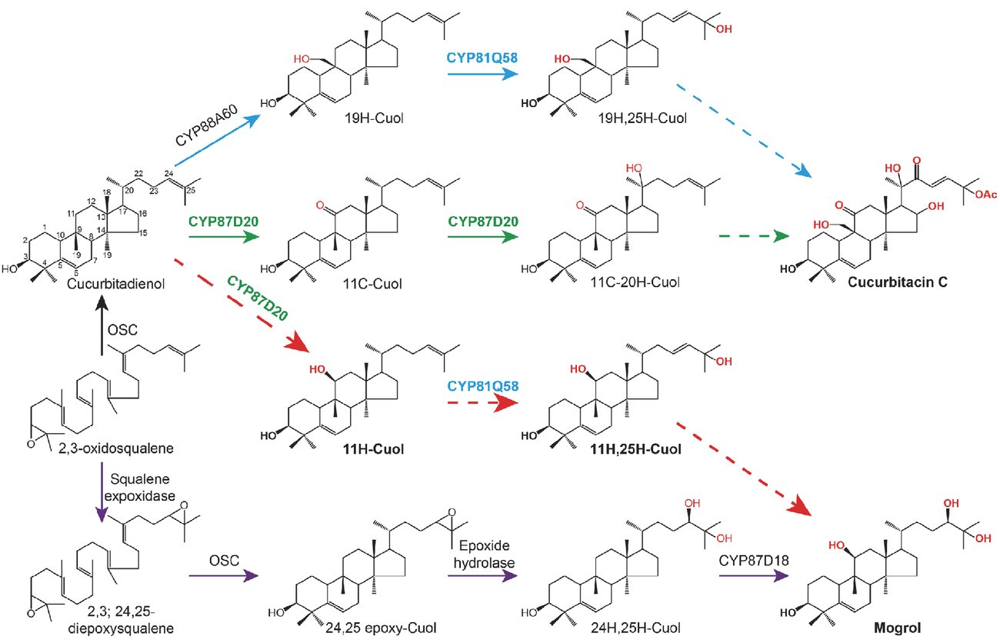
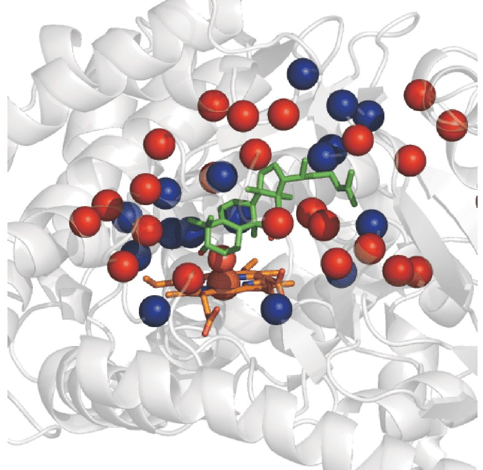
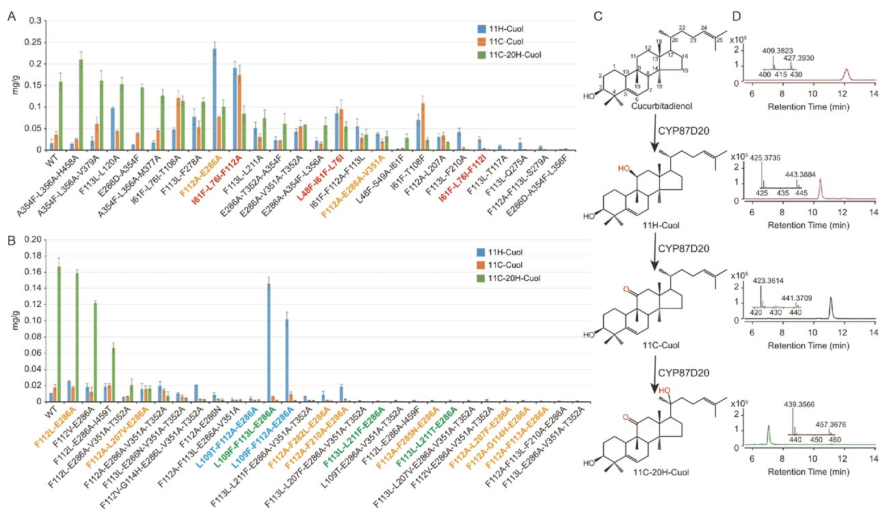
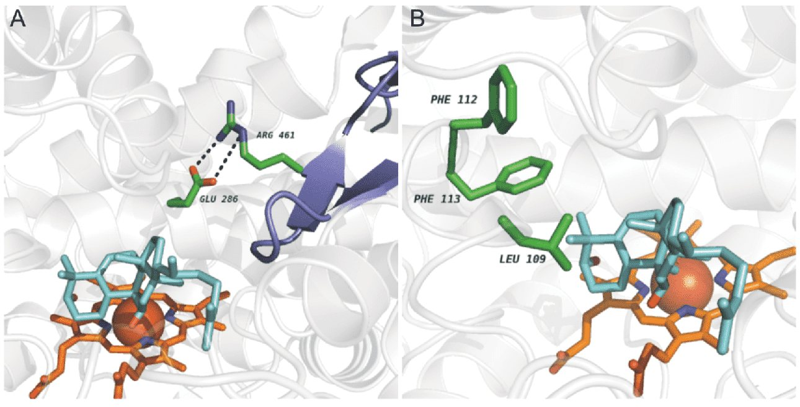
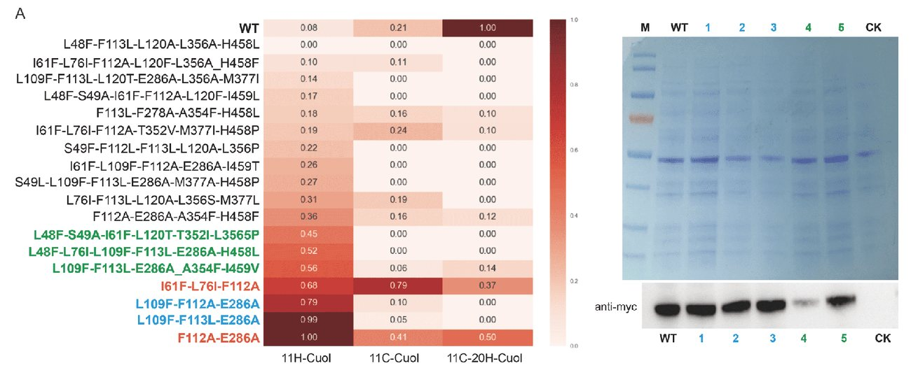
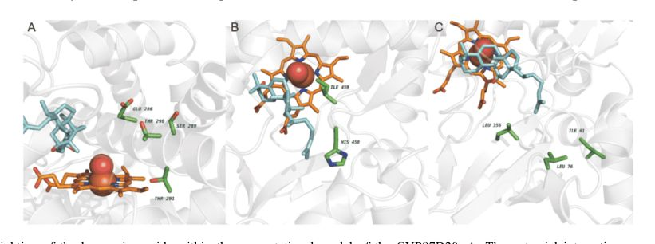

A structural and data-driven approach to engineering a plant cytochrome P450 enzyme
INTRODUCTION
Cytochrome P450s (hereafter simply called P450s) are structurally and functionally diverse metabolites that offer a huge potential for the discovery of high-value molecules for pharmaceutical and industrial uses. P450s are among the most versatile biological catalysts that are involved in ratelimiting reactions in the biosynthesis of a vast array of plant natural products (Gillam and Guengerich, 2001). Hemecontaining P450s coupled with oxidoreductases (cytochrome P450 reductase (CPR)) usually catalyze regio-and stereoselective oxidations as well as extremely challenging reactions, such as deamination, decarboxylation, C-C cleavage, ring expansion/opening/migration/coupling, and dehydration (Jung et al., 2011). Unfortunately, to date, only a small number of plant P450s have been functionally characterized, although ~1% of protein-coding genes present in plant genomes are predicted to encode P450s (Ghosh, 2017). For example, we know the functions of only ~60 P450s involved in plant triterpenoids biosynthesis (Ghosh, 2017), which severely restricts the metabolic engineering of high-value plant-derived metabolites.
In general, P450s have a nonpolar active site and a high conformational flexibility, making them highly adaptable and attractive targets for enzyme engineering (Moses et al., 2013). Usually, improved selectivity and activity are required to customize enzymes as biocatalysts that can benefit metabolic engineering (Bornscheuer et al., 2012). Directed evolution (DE) using iterative improvement rounds is a powerful method of adapting enzymes to specific tasks (Reetz, 2013). However, to deliver enzymes with desired properties, DE often requires the ability to screen large libraries (Packer and Liu, 2015). To reduce the number of protein variants to be tested, structure-guided protein engineering methods, such as computational repurposing of enzymes (Khare et al., 2012), computational guided libraries (Cherny et al., 2013), data-driven optimization (Govindarajan et al., 2015), and in silico models combined with evolutionary information (Goldsmith et al., 2016), have been widely adopted. Unfortunately, in the absence of a crystal structure for a target enzyme, efficient structure-driven design heavily relies on both the quality of homology modeling and the accuracy to dock the substrate to the substratebinding site. Rosetta, a de novo protein design software program, coupled with the amino acid co-evolving information computed by GREMLIN can generate high-resolution protein structures (Song et al., 2013) and place ligands into enzymes with high accuracy (Meiler and Baker, 2006). Rosetta was successfully used to alter the function of an oxidosqualene cyclase (OSC) identified from cucumber (Ma et al., 2016). Therefore, a similar strategy should be useful in engineering plant P450s whose crystal structures are extremely rare.
The plant family Cucurbitaceae includes many important fruits, such as cucumber, melon, and watermelon. The triterpenoids produced by these plants originate from the same cucurbitane backbone and, on the basis of their bioactivities, are of two types, cucurbitacins and mogrosides (Chen et al., 2005). Cucurbitacins, which are mainly isolated from cucumber and its relatives, are intensely bitter compounds that have antitumor properties. Mogrosides are derived from the Chinese cucurbit Luo Han Guo (Siraitia grosvenorii) and are potent natural sweeteners (Swingle et al., 1941;Kasai et al., 1989). However, because of a long growth period (up to 1 year) of S. grosvenorii and a labor-intensive artificial pollination process required to produce fruits, the commercial use of mogrosides as natural sweeteners is limited.
In the biosynthesis of cucurbitacin C (CuC) in cucumber (Figure 1), P450s belonging to the CYP87D20 and CYP81Q58 families catalyze C11 and C25 hydroxylation of the cucurbitane backbone, respectively (Shang et al., 2014;Zhou et al., 2016). On the other hand, in the biosynthesis of mogroside in S. grosvenorii, a P450 from the CYP87D18 family and an epoxide hydrolase catalyze C11, C24, and C25 hydroxylation of the cucurbitane backbone (Itkin et al., 2016) (Figure 1). Given that both C11 hydroxylation and C25 hydroxylation of the cucurbitane backbone are required to produce either cucurbitacins or mogrosides and cucumber has a relatively shorter growth period (4 months) and a much higher yield of CuC in the leaves, it might be possible to create a de novo mogrol (the precursor of mogrosides) metabolic pathway by engineering and redeploying CYP87D20 and CYP81Q58 to direct the metabolic flux from CuC toward mogrol biosynthesis in cucumber (Figure 1). This proof-of-concept study was launched by first creating an accurate protein model of CYP87D20 using Rosetta combined with amino acid evolutionary data. Next, designable positions were identified on the basis of amino acid conservation as well as the co-evolutionary information computed by GREMLIN. Iterative experimental feedback optimization was applied to investigate the key amino acids and identify new positions for P450 engineering. After three rounds of iterative design and evaluation of 96 protein variants, undesired by-product formation of multifunctional CYP87D20 was eliminated, leading to a major first step toward redesigning the mogrol biosynthetic pathway (Figure S1 in Supporting Information).

RESULTS
Round 1 engineering (R1): P450 modeling and generation of protein variants
To manipulate the metabolic flux from CuC biosynthesis toward mogrol biosynthesis, the multifunctional catalytic nature of CYP87D20 (formation of C11 ketone and C20 hydroxyl groups) must be altered to perform a single hydroxylation at C11 (Figure 1). The available crystal structure of plant cytochrome P450s is an allene oxide synthase (AOC), not an oxidase like with most P450s. Therefore, to identify amino acids key for cucurbitadienol catalysis, we created a homology model of CYP87D20 on the basis of the crystal structure of CYP51 (Protein Data Bank (PDB) ID: 4LXJ) from Saccharomyces cerevisiae using Rosetta, followed by placement of the heme group into the active site of the model using the RosettaLigand dock (Meiler and Baker, 2006). Next, the substrate, cucurbitadienol, was docked into the active site of the model using a distance restraint of 3.5 Å between C11 of the substrate and the coordinating oxygen atom of the Fe ion in heme group. To identify side chains that might influence the reaction mechanism toward the desired product, we analyzed all side chains and backbone atoms within 6 Å of the ligand using evolutionary information by both a position-specific scoring matrix (PSSM) and their coevolutionary couplings computed by GREMLIN (Kamisetty et al., 2013). Residues interacting directly with the heme group were excluded from the analysis as these sites could affect reactivity or binding of the heme group (Figure 2). From the GREMLIN analysis, one additional residue, Q275, was included, even though it was more than 6 Å away. Q275 was given a low evolutionary score, but studies have shown that it affects protein stability (Goldsmith et al., 2017). As a stabilized scaffold might accept more mutations, this position was selected for mutagenesis to determine whether we could increase enzyme expression or stability. Therefore, we identified 24 positions with positive PSSM values as potential sites for changing the reaction mechanism (Table S1 in Supporting Information).

Next, we generated a subset of 22 mutant protein variants, each having 3 amino acid substitutions designed to change the wild-type (WT) residues into residues normally involved in redox potentials, in packing of the substrate (e.g., aromatic residues such as F112 and F113), or as potential bases to activate water molecules (e.g., E286) (Figure S2 in Supporting Information). Of the 22 protein variants, 8 designs contain a substitution at both F112 and F113 positions. As changing two aromatic residues of the enzyme could desta-bilize the protein, we created a subset of double mutants by changing either the F112 or the F113 position (Figure S2 in Supporting Information). A further subset was generated from 6 of the protein variants by changing the substitution size compared to the initial protein variant, for example, H458A or H458F (Figure S2 in Supporting Information), which further expanded the initial set of protein variants to 30 designs (Table S2 in Supporting Information). Each protein variant was co-expressed with a cucumber CPR (Csa1G423150) gene in yeast, as described previously (Zhou et al., 2016).
After 2 days of protein induction, a yeast extract was prepared and analyzed using high-performance liquid chromatography (HPLC) coupled with high-resolution quadrupole time-of-flight mass spectrometry (qTOF) and atmospheric pressure chemical ionization (APCI). As shown in Figure 3A, 6 of these protein variants had diminished activity for production of 11-carbonyl cucurbitadienol (11C-Cuol) and 11-carbonyl-20-hydroxyl cucurbitadienol (11C-20H-Cuol). High-yield protein variants of 11-hydroxyl cucurbitadienol (11H-Cuol) were identified. Interestingly, we found positions near the active site changing redox potentials or packing of the substrate (e.g., aromatic residues F112A or F113L) or removal of a negative charge (e.g., E286A) affected the reaction by comparing the protein variants with similar amino acid mutations but having different product yields (Figure 3A).

Round 2 engineering (R2): increase of product specificity driven by R1 feedback
To further improve selectivity and activity of the reaction mechanism, we used protein variants identified from round 1 (R1) as the starting point to generate new protein variants. In R1, we found that E286 and F112 were key residues for discrimination between hydroxylation and ketone formation at C11 of the substrate. From the initial docking, we identified new positions that were spatially close to the three key positions identified from R1 (F112, E286, and V351). From these observations, three new positions were selected (L109, F282, and I459), and again, other positions were deselected (e.g., M103, W119, and I280) because of their spatial proximity to the heme group. For round 2 (R2) optimization, we used the most active protein variant from R1 (F112A-E286A) as the starting template sequence to generate 15 new protein variants by changing the volume and polarity of the binding site (Table S3 in Supporting Information). Four of the protein variants (Table S3 in Supporting Information, red) were generated by assuming that the identified positions from R1 were additive for their selectivity toward hydroxylation. Finally, we designed a subset of 12 protein variants on the basis of the F112A-E286A mutant by inserting mutations into this protein variant (Figure S3 in Supporting Information).
A total of 29 designs were tested, confirming that removing the charge of E286, either by mutating to alanine or asparagine (E286A or E286N), decreases the production of 11C-Cuol and 11C-20H-Cuol (Figure 3B-D), indicating that this position could be involved in subtracting the additional proton, either directly from the hydroxyl on C11 or through a water-mediated network (Figure 4A). More intriguingly, adding the mutation of L109F to the protein variant F112A-E286A decreases the generation of the by-products 11C-Cuol and 11C-20H-Cuol, while L109T mutation leads to a complete loss of function. This result suggested that L109 might be responsible for aligning the substrate toward the catalytic site or destabilizing the enzyme such that it can perform only one round of oxidation (Figure 4B). We observed that 11C-20H-Cuol was the major product catalyzed by protein variant F112L-E286A (Figure 3B), while 11H-Cuol was the major product catalyzed by protein variant F112A-E286A (Figure 3B). As F112 is located in the second shell with respect to the substrate, F112A might destabilize the enzyme, while F112L still preserves the packing of the second shell (Figure 4B). In addition, we observed that F113, G114, L207, F210, F282, and F285 are important amino acids for the reaction, as mutating any of these positions in the protein variant F112A-E286A dramatically lowered the enzyme's catalytic ability (Figure 3B).

Round 3 engineering (R3): selectivity and activity improvement of engineered protein variants by feedback loop from R1 and R2
To further investigate the combinations and increase the activity and specificity of the enzyme, a final round of protein variants was generated. Round 3 (R3) engineering was driven by the R1 and R2 results, with the aim of further modifying the enzyme for higher selectivity and specificity. We selected 7 protein variants from among all the protein variants tested from R1 and R2 on the basis of their activity toward 11H-Cuol. Furthermore, the protein variants were selected on the basis of selectivity, for example, reduced catalytic activity toward 11C-Cuol and 11C-20H-Cuol (Table S4 in Supporting Information). To generate new protein variants, we systematically generated all protein variants in silico by introducing 2-3 mutations into the 7 starting sequence protein variants, creating>27,000 possible protein variants. To limit the size of the protein variants to be experimentally tested and to extract as many diverse sequences as possible, we used cd-hit to cluster all the in silico-generated sequences into 45 clusters and to identify the center sequence within each cluster. The protein variants showed increased activity toward 11H-Cuol compared to the WT enzyme, and the selectivity for the desired substrates was increased for many of the protein variants. The protein var- iant F112A_E286A from R2 still gave the highest yield of 11H-Cuol, although we still observed yields of the two byproducts (Figure 5A). Two protein variants with L109F mutations, L109F_F112A_E286A and L109F_F113L_ E286A, produced 11H-Cuol, while showing reduced synthesis of 11C-Cuol and 11C-20H-Cuol, respectively (Figure 5A). Three protein variants from R3 mainly produced the desired hydroxylation at C11, but their lysate yield was ~50% of the maximum protein variant observed (Figure 5A).

Next, protein stability of these five protein variants was analyzed by western blotting. Four of the protein variants were expressed in yeast at a level similar to the WT enzyme, while one protein variant (L48F-S49A-I61F-L120T-T352I-L356P) was not (Figure 5B). Only a small amount of this one protein variant was detected in the yeast lysate, although the enzyme showed a good capacity to generate the desired product (Figure 5A), indicating that once the protein stability was improved, this protein variant from R3 might possess a higher catalytic ability than expected. We also calculated the enzyme catalytic kinetics of recombinant WT enzyme and the two protein variants from R2 (L109F-F113L-E286A) and R3 (L48F-L76I-L109F-F113L-E286A-H458L) on the basis of the substrate consumption rate. Although the two protein variants show lower affinity for substrate binding, we observed higher catalytic capacity in generation of the desired product (Figure S4 in Supporting Information, Table 1).
DISCUSSION
In this study, we presented a structural and data-driven approach to efficient plant P450 engineering in order to generate enzymes with desired properties. The Rosetta software was used to generate atomistic models with both cofactors and substrates in the active site to narrow down the number of positions to be mutated (Leaver et al., 2011). Furthermore, to limit the number of amino acids tested at these positions, we used evolutionary information from GREMLIN to select amino acids with positive evolutionary scores and to avoid co-evolving positions. During each iteration of protein engineering, we combined the most fitting mutation to increase specificity for the desired product. To improve the selectivity of the enzyme toward C11 hydroxylation of cucurbitadienol, each protein variant was experimentally evaluated and its data incorporated into the next round of optimization. During protein engineering, only 96 protein variants were screened. With this limited number of protein variants tested and designed, we could obtain protein variants with reduced ability to catalyze undesired by-products. Information about amino acids key for specificity could iteratively be fed back into the computational process to further identify new residues and areas of interest within the enzyme. Thus, accuracy of the CYP87D20 model, including the docking region, is constantly improving by expansion of the spatial volume of potential residues involved in catalysis.
After three rounds of engineering, we created protein variants able to produce the desired compound in lysates and still have yields comparable to the WT enzyme (Figure 5 and Figure S4 in Supporting Information). Interestingly, protein variants capable of catalyzing the first hydroxylation could be grouped into four categories on the basis of their mutations. The initial mutation, E286A, was identified as being important for multiple substrate oxidations (Figure 3). It is believed that E286A plays a role in shuttling protons into the active site (Gerber and Sligar, 1992), and in our homology model, it formed a salt bridge to R461, effecting the closing of β5 in the CYP87D20 computational model (Figure 4A). E286 is highly conserved in P450s, and mutating it to alanine can greatly reduce reactivity of the enzymes by either changing the basicity of residues in the threonine cluster -E286A) and the WT normalized by the largest yield of product where darker red is more active. The three columns correspond to each of the three possible products. For compound 11H-Cuol, value obtained from the variant F112A-E286 was set as 1.00 and was used to normalize the value of 11H-Cuol and 11C-Cuol from the other samples. For compound 11H-20H-Cuol, value obtained from the WT was set as 100%, and this was used to normalize the value from the other samples. Variants from R1 and R2 are indicated in red and blue, respectively, while three optimized variants from R3 are indicated in green. It is observed that the specificity of the desired product, 11H-Cuol is increased for multiple of the variant but for most at the expenses of activity as well. Data are presented as the geometric mean (n=3). B, Protein stability of variants were analyzed by western blotting. WT and each variant were expressed with a MYC tag in yeast and 20 μg yeast total protein prepared for each sample was loaded into each lane. The gel was stained with coomassie brilliant blue (up) and anti-myc antibody was used to show the level of the target protein in each sample (bottom). Three variants from R2 (1, 2, and 3) are indicated in blue, while two variants (4 and 5) from R3 are indicated in green. WT, CYP87D20; CK, empty vector; 1, L109F-F113L-E286A; 2, L109T-F112A-E286A; 3, L109F-F112A-E286A; 4, L48F-S49A-I61F-L120T-T352I-L356P; 5, L48F-L76I-L109F-F113L-E286A-H458L.
(S289, T290, and T291) (Figure 6A) or preventing protons from shuttling to increase hydrogenperoxide production, as observed in other enzymes (Hanioka et al., 1992;Ishigooka et al., 1992).

The second category consisted of residues interacting with the ring system of the substrate (F113L and L109F) and the second shell residue F112 according to our docking results. These residues are located in the B-helix (Figure 4B), which is important for forming the active site upon ligand binding (Zerbe et al., 2002;Halpert, 2011). The third category was β5 (H458 and I459) and might affect product formation (Figure 6B). The fourth category was more scattered around the protein, where the docked model of the substrate suggested that the acyl chain could interact with residues: I61, L76, and L356 (Figure 6C).
We also investigated another residue, serine 287 (S287), which was initially excluded from the protein variant design as it was considered too close to the heme group. However, a previous study has found that mutation of threonine 231 (T231A) of a P450 (XiaM), a homolog amino acid to the S287 of CYP87D20, can stop the consequent hydroxylation catalyzed by the P450 (Zhang et al., 2012). T231 is located within the highly conserved GXXT motif of the I-helix and is believed to be involved in delivering protons from water to the substrate. Thus, we introduced similar mutations to the S287 of CYP87D20 and found that the enzyme's catalytic capacity was inactivated after mutation, further indicating subtleties around the heme group and that the CYP87D20 model is reliable for enzyme engineering (Figure S5 in Supporting Information).
Functional diversification of plant P450s is an essential driver to form structurally diverse plant natural products. The ability to repurpose or create de novo pathways by engineering these enzymes has huge potential for metabolic engineering and synthetic biology studies, especially when the availability of crystal structures of plant P450s is limited. In this study, we applied an integrated approach to redesigning a plant P450 as the first step to manipulating the metabolic flux from cucurbitacins toward mogrol. Re-engineering of plant P450s involved in other known pathways using the same strategy would pave the way for efficient production of high-value plant metabolites in the future.
MATERIALS AND METHODS
Homology modeling and ligand docking
On the basis of the yeast crystal structure of CYP51 (PDB ID: 4LXJ) (Monk et al., 2014), we created a homology model from Saccharomyces cerevisiae, as described previously (Ma et al., 2016). A heme group with a hydroxide coordinating the Fe ion was superpositioned into the active site by placing the heme group into the active site on the basis of the heme placement from P450 StaH (Ulrich et al., 2016) (PDB ID: 5EX6). To refine the heme group placement, it was docked using the RosettaLigand dock (Meiler and Baker, 2006;Davis and Baker, 2009;Lemmon et al., 2012) in Rosetta-Scripts (Fleishman et al., 2011) around the initial placement using a distance restraint between the Fe ion and cysteine 423 (C423) 2.3 Å +/-0.1 Å. Distance restraints were added between the two arginines (R357 and R421) to the carboxylate groups on heme (O1/O3 and O1D/O2D, respectively). Next, the substrate was docked into the active site using RosettaLigand with 5,000 placements.
Amino acid co-evolution analysis of the CYP87D20 sequence
The coupling and conservation matrix for CYP87D20 was computed using GREMLIN (Kamisetty et al., 2013). Briefly, GREMLIN was run with default parameters using HHblist
Figure 6
Highlighting of the key amino acids within the computational model of the CYP87D20. A, The potential interactions among E286 and the threonine cluster. B, The H458 and I459 locate on the β5 hairpin that packs with the substrate. C, The I61, L76, and L356 have the potential to interact with the acyl chain of the substrate. (Remmert et al., 2012) to generate a multiple sequence alignment (MSA) with 4 iterations and an E-value cut off 1×10 -10 with a coverage and removal of gaps of 75.
Introduction of multimutations into the CYP87D20 sequence
A mutation was introduced into each fragment using specific mismatched base primers listed in Table S5 in Supporting Information. Each mutated gene was divided into several fragments on the basis of mutation sites. Next, the fragments were amplified in a polymerase chain reaction (PCR) system using the mixed primers. After amplification, a restrictionligation reaction (15 µL) was set up with the PCR fragments, linearized vector pYES2, 1× bovine serum albumin (BSA) buffer, 40 U of BsaI, 1× T4 DNA ligase buffer, and 2,000 U of T4 DNA ligase (Golden Gate cloning; New England Biolabs, USA). The reaction mixture was incubated in a thermocycler for 40 cycles (37°C, 3 min; 16°C, 4 min), and heat inactivation was recommended at 80°C for 10 min. The ligated product was transformed into the Escherichia coli strain Trans5α (TransGen Biotech, Beijing, China). The positive clone was sequenced to ensure the protein variant gene had the right mutations. A second or third round of vector construction using the same protocol might be needed to achieve the goal.
Protein heterologous expression in yeast
The coding sequence of CYP87D20 or protein variants was constructed into pYES2 (Invitrogen, USA) and sequenced for errors using the primers listed in Table S5 in Supporting Information. The yeast strain INVSc1 (Invitrogen) was transformed using different recombinant plasmids. First, the recombinant colonies were cultured in Synthetic Complete (SC) minimal medium containing 2% glucose at 30°C. Next, the cells were collected and resuspended in SC minimal medium containing 2% galactose instead of glucose for protein induction and then cultured at 30°C for 4 days.
Western blotting
The total protein was extracted from the yeast overexpressing the WT enzyme or the empty vector. For each sample, 20 μg of protein was separated on 10% sodium dodecyl sulfate polyacrylamide gel electrophoresis (SDS-PAGE) gel and transferred to a polyvinylidene fluoride (PVDF) membrane. Nonspecific sites were blocked with 5% nonfat dried milk, and the PVDF membrane was incubated with an anti-Myc (MBL) antibody at 4°C overnight, followed by incubation with a peroxidase-conjugated goat antimouse (H+L) antibody at 37°C for 1 h. The signals were detected using the Tanon5200 imaging system (Tian Neng, China).
Metabolite extraction and HPLC-APCI-qTOF analysis of samples
Yeast cells harboring different recombinant plasmids were collected by centrifugation at 6,000 r min -1 for 10 min. The pellet was resuspended in 20% KOH/50% ethanol (EtOH) (1:1) and underwent alkali lysis at 95°C for 1 h. The lysate was extracted twice with the same volume of petroleum ether (PE; 60-90°C). Then, the PE was gathered and dried with nitrogen gas. The yeast extracts were dissolved in methanol, and the solution was filtered through a 0.22 μm membrane prior to injection. Chromatography was performed using an Agilent 1200 HPLC system equipped with a 5 μm, 4.6×100 mm 2 ZORBAX SB-C18 column (Agilent Technologies, USA). The column temperature was maintained at 35°C. The mobile phase consisted of 0.1% formic acid aqueous solution (v/v, solvent A) and methanol/0.1% formic acid (v/v, solvent B). The flow rate was set at 0.4 mL min -1 , and the injection volume was 15 μL. A linear gradient with the following proportion of phase B (t min , B%) was used: (0, 30), (2, 30), (10, 60), (15, 95), and (30, 95). qTOF-MS was performed using an Agilent 6510 Q-TOF system equipped with atmospheric pressure chemical ionization (APCI) in a positive ion model. The optimum MS conditions were as follows: corona current=4 μA; capillary voltage=3.0 kV; skimmer voltage=65 V; segmented fragmentor=135 V; gas temperature=300°C; vaporizer temperature=350°C; drying gas flow rate=4.5 L min -1 ; and nebulizer pressure=40 psi.
Nitrogen was used as the collision, drying, and nebulizer gas. MS spectra were acquired at 150-1,000 m/z using an extended dynamic range and a scan rate of 1.5 spectra s -1 by varying collision energy with mass.
Kinetic analysis
For kinetic analysis, microsomes of the yeast strain WAT11 expressing the WT enzyme, L109F-F113L-E286A, and L48F-L76I-L109F-F113L-E286A-H458L were prepared, as described previously (Pompon et al., 1996). As a control, the microsome of the WAT11 strain harboring the empty vector pESC-TRP was prepared. Standard enzyme assays were performed in a total volume of 500 μL containing 50 mmol L -1 4-(2-hydroxyethyl)-1-piperazineethanesulfonic acid (HEPES) (pH 7.5) and 2 mg of microsomal proteins. Serial concentrations of cucurbitadienol (5, 10, 15, 20, 40, 80, and 100 μmol L -1 ) were used as the substrate, and 0.5 mmol L -1 reduced nicotinamide adenine dinucleotide phosphate (NADPH) and a regenerating system (5 mmol L -1 glucose-6-phosphate, 0.5 unit mL -1 of glucose-6-phosphate dehydrogenase, 5 μmol L -1 flavin adenine dinucleotide (FAD), 5 μmol L -1 flavin mononucleotide (FMN), and -1 dithiothreitol (DTT)) as the cofactor. Reactions were initiated by substrate addition, incubated with shaking at 30°C for 30 min, and then terminated by extracting thrice with 500 μL of ethyl acetate, using 0.75 μmol L -1 cholesterol as an internal standard. Pooled extracts were dried using a vacuum evaporator. The residues were derivatized using 30 μL of N-methyl-N-(trimethylsilyl) trifluoroacetamide (MSTFA) at 60°C for 30 min and then analyzed on a 7890B/ 7000C gas chromatograph-mass spectrometry (GC-MS) system (Agilent) equipped with an HP-5MS column (5% phenyl methyl silox, 30 m×250 μm internal diameter, 0.25 μm film; Agilent). The front inlet, transfer line, and ion source temperatures were set at 280, 250, and 230°C, respectively. The oven temperature was programmed as follows: 70°C for 2 min, then 20°C min -1 to 260°C, and finally 10°C min -1 to 300°C for 10 min. The flow rate of the carriage gas (He) was set at 1 mL min -1 .
Full mass spectra were generated for metabolite identification by scanning the m/z range from 50 to 800. K m values were calculated by nonlinear regression using GraphPad Prism 5 software, and the data were reported as mean ±standard deviation from triplicate analyses.
The supporting information is available online at http://life.scichina.com and https://link.springer.com . The supporting materials are published as submitted, without typesetting or editing. The responsibility for scientific accuracy and content remains entirely with the authors.
References
- Bornscheuer,U.T.,Huisman,G.W.,Kazlauskas,R.J.,Lutz,S.,Moore,J.C., and Robins, K. (2012). Engineering the third wave of biocatalysis. Nature 485, 185–194.
- Chen, J.C., Chiu, M.H., Nie, R.L., Cordell, G.A., and Qiu, S.X. (2005). Cucurbitacins and cucurbitane glycosides: structures and biological activities. Nat Prod Rep22, 386–399.
- Cherny, I., Greisen Jr., P., Ashani, Y., Khare, S.D., Oberdorfer, G., Leader, H., Baker, D., and Tawfik, D.S. (2013). Engineering V-type nerve agents detoxifying enzymes using computationally focused libraries.
- Davis, I.W., and Baker, D. (2009). RosettaLigand docking with full ligand and receptor flexibility.J Mol Biol385, 381–392.
- Fleishman, S.J., Leaver-Fay, A., Corn, J.E., Strauch, E.M., Khare, S.D., Koga, N., Ashworth, J., Murphy, P., Richter, F., Lemmon, G., et al. (2011). RosettaScripts: a scripting language interface to the Rosetta macromolecular modeling suite.PLoS ONE6, e20161.
- Gerber, N.C., and Sligar, S.G. (1992). Catalytic mechanism of cytochrome P-450: evidence for a distal charge relay.J Am Chem Soc114, 8742– 8743.
- Ghosh, S. (2017). Triterpene structural diversification by plant cytochrome P450 enzymes.Front Plant Sci8, 1886.
- Gillam, E.M.J., and Guengerich, F.P. (2001). Exploiting the versatility of human cytochrome P450 Enzymes: the promise of blue roses from biotechnology.IUBMB Life52, 271–277.
- Goldsmith, M., Aggarwal, N., Ashani, Y., Jubran, H., Greisen, P.J., Ovchinnikov, S., Leader, H., Baker, D., Sussman, J.L., Goldenzweig, A., et al. (2017). Overcoming an optimization plateau in the directed evolution of highly efficient nerve agent bioscavengers.Protein Eng Des Sel30, 333–345.
- Goldsmith, M., Eckstein, S., Ashani, Y., Greisen, P., Leader, H., Sussman, J.L., Aggarwal, N., Ovchinnikov, S., Tawfik, D.S., Baker, D., et al. (2016). Catalytic efficiencies of directly evolved phosphotriesterase variants with structurally different organophosphorus compounds in vitro. Arch Toxicol90, 2711–2724.
- Govindarajan,S.,Mannervik,B.,Silverman,J.A.,Wright,K.,Regitsky,D., Hegazy, U., Purcell, T.J., Welch, M., Minshull, J., and Gustafsson, C. (2015). Mapping of amino acid substitutions conferring herbicide resistanceinwheatglutathionetransferase. ACSSynthBiol 4,221–227.
- Halpert, J.R. (2011). Structure and function of cytochromes P450 2B: from mechanism-based inactivators to X-ray crystal structures and back.
- Hanioka, N., Gonzalez, F.J., Lindberg, N.A., Liu, G., Gelboin, H.V., and Korzekwa, K.R. (1992). Site-directed mutagenesis of cytochrome P450s CYP2A1 and CYP2A2: influence of the distal helix on the kinetics of testosterone hydroxylation.Biochemistry 31, 3364–3370.
- Ishigooka, M., Shimizu, T., Hiroya, K., and Hatano, M. (1992). Role of Glu318attheputativedistalsiteinthecatalyticfunctionofcytochrome P450d. Biochemistry 31, 1528–1531.
- Itkin, M., Davidovich-Rikanati, R., Cohen, S., Portnoy, V., DoronFaigenboim, A., Oren, E., Freilich, S., Tzuri, G., Baranes, N., Shen, S., et al. (2016). The biosynthetic pathway of the nonsugar, highintensity sweetener mogroside V fromSiraitia grosvenorii. Proc Natl Acad Sci USA113, E7619–E7628.
- Jung,S.T.,Lauchli,R.,andArnold,F.H.(2011).CytochromeP450:taming a wild type enzyme.Curr Opin Biotech22, 809–817.
- Kamisetty, H., Ovchinnikov, S., and Baker, D. (2013). Assessing the utility of coevolution-based residue-residue contact predictions in a sequenceand structure-rich era.Proc Natl Acad Sci USA110, 15674–15679.
- Kasai,R.,Nie,R.L.,Nashi,K.,Ohtani,K.,Zhou,J.,Tao,G.D.,andTanaka, O. (1989). Sweet cucurbitane glycosides from fruits of Siraitia siamensis (chi-zi luo-han-guo), a Chinese folk medicine.Agric Biol Chem 53, 3347–3349.
- Khare, S.D., Kipnis, Y., Greisen, P.J., Takeuchi, R., Ashani, Y., Goldsmith, M., Song, Y., Gallaher, J.L., Silman, I., Leader, H., et al. (2012). Computational redesign of a mononuclear zinc metalloenzyme for organophosphate hydrolysis.Nat Chem Biol8, 294–300.
- Leaver-Fay, A., Tyka, M., Lewis, S.M., Lange, O.F., Thompson, J., Jacak, R., et al. (2011). ROSETTA3: an object-oriented software suite for the simulation and design of macromolecules. Meth Enzymol 487, 545– 574.
- Lemmon, G., and Meiler, J. (2012). Rosetta Ligand docking with flexible XML protocols. In Computational Drug Discovery and Design (New York: Springer), pp. 143–155.
- Ma,Y.,Zhou,Y.,Ovchinnikov,S.,GreisenJr.,P.,Huang,S.,andShang,Y. (2016). New insights into substrate folding preference of plant OSCs.
- Meiler, J., and Baker, D. (2006). ROSETTALIGAND: protein-small molecule docking with full side-chain flexibility.Proteins65, 538–548.
- Monk, B.C., Tomasiak, T.M., Keniya, M.V., Huschmann, F.U., Tyndall, J. D.A., O’Connell III, J.D., Cannon, R.D., McDonald, J.G., Rodriguez, A., Finer-Moore, J.S., et al. (2014). Architecture of a single membrane spanning cytochrome P450 suggests constraints that orient the catalytic domain relative to a bilayer.Proc Natl Acad Sci USA111, 3865–3870.
- Moses, T., Pollier, J., Thevelein, J.M., and Goossens, A. (2013). Bioengineering of plant (tri)terpenoids: from metabolic engineering of plants to synthetic biologyin vivo and in vitro. NewPhytol 200, 27–43.
- Packer, M.S., and Liu, D.R. (2015). Methods for the directed evolution of 881Li, D., et al. Sci China Life Sci July (2019) Vol.62 No.7 proteins. Nat Rev Genet16, 379–394.
- Pompon, D., Louerat, B., Bronine, A., and Urban, P. (1996). Yeast expression of animal and plant P450s in optimized redox environments.
- Reetz, M.T. (2013). Biocatalysis in organic chemistry and biotechnology: past, present, and future.J Am Chem Soc135, 12480–12496.
- Remmert, M., Biegert, A., Hauser, A., and Söding, J. (2012). HHblits: lightning-fast iterative protein sequence searching by HMM-HMM alignment. Nat Methods9, 173–175.
- Shang,Y.,Ma,Y.,Zhou,Y.,Zhang,H.,Duan,L.,Chen,H.,Zeng,J.,Zhou, Q., Wang, S., Gu, W., et al. (2014). Biosynthesis, regulation, and domestication of bitterness in cucumber.Science 346, 1084–1088.
- Song, Y., DiMaio, F., Wang, R.Y.R., Kim, D., Miles, C., Brunette, T., Thompson, J., and Baker, D. (2013). High-resolution comparative modeling with RosettaCM.Structure 21, 1735–1742.
- Swingle, W.T. (1941).Momordica grosvenori Sp. Nov. the source of the Chinese Lo Han Kuo. J Arnold Arbor 22, 197–203.
- Ulrich, V., Peschke, M., Brieke, C., and Cryle, M.J. (2016). More than just recruitment: the X-domain influences catalysis of the first phenolic coupling reaction in A47934 biosynthesis by Cytochrome P450 StaH. Mol Biosyst12, 2992–3004.
- Zerbe, K., Pylypenko, O., Vitali, F., Zhang, W., Rouset, S., Heck, M., Vrijbloed, J.W., Bischoff, D., Bister, B., Süssmuth, R.D., et al. (2002). Crystal structure of OxyB, a cytochrome P450 implicated in an oxidative phenol coupling reaction during vancomycin biosynthesis.J Biol Chem277, 47476–47485.
- Zhang,Q.,Li,H.,Li,S.,Zhu,Y.,Zhang,G.,Zhang,H.,Zhang,W.,Shi,R., and Zhang, C. (2012). Carboxyl formation from methyl via triple hydroxylations by XiaM in xiamycin A biosynthesis.Org Lett 14, 6142–6145.
- Zhou, Y., Ma, Y., Zeng, J., Duan, L., Xue, X., Wang, H., Lin, T., Liu, Z., Zeng, K., Zhong, Y., et al. (2016). Convergence and divergence of bitterness biosynthesis and regulation in Cucurbitaceae.Nat Plants2, 16183.
- Li, D., et al. Sci China Life Sci July (2019) Vol.62 No.7 SCIENCE CHINA Life Sciences is a copyright of Springer, 2019. All Rights Reserved.